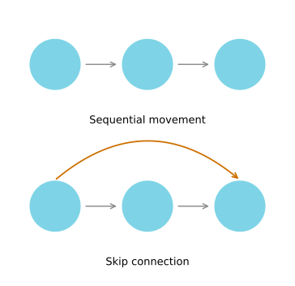

Build and train two ConvNets in TensorFlow Keras, a smile detector with the Sequential API and a sign language classifier with the Functional API.
Published
Friday, August 14, 2026
The previous lab built every piece of a convolutional network by hand in NumPy, with four nested loops and explicit index bookkeeping. This lab throws all of that away and lets a framework do it. The point is not that the previous work was wasted. The point is that you now know exactly what Conv2D is doing when you call it.
Two models get built here, and each one introduces a different way of describing a network in Keras.
A mood classifier that decides whether the person in a photograph is smiling, built with the Sequential API.
A ConvNet that recognizes six sign language digits, built with the Functional API.
By the end you will be able to build and train a ConvNet in TensorFlow for a binary classification problem, do the same for a multiclass problem, and explain when each of the two APIs is the right choice.
Packages
Keras layers live in tensorflow.keras.layers, imported here as tfl so that a layer reads as tfl.Conv2D rather than the full path.
The last two lines before the import of tfl are what make the numbers on this page reproducible, and they are worth knowing about. Seeding alone is not enough for TensorFlow. tf.keras.utils.set_random_seed covers the Python, NumPy, and TensorFlow generators in one call, which fixes the weight initialization and the shuffling. It does not fix the arithmetic. Many TensorFlow kernels split their work across threads and add the partial results back in whatever order the threads finish, and floating point addition is not associative, so two runs can differ in the last digits and then diverge as training amplifies the gap. enable_op_determinism forces the deterministic version of those kernels. Training gets a little slower and the results become repeatable.
import osos.environ["TF_CPP_MIN_LOG_LEVEL"] ="3"# quieten TensorFlow's startup loggingimport h5pyimport numpy as npimport pandas as pdimport matplotlib.pyplot as pltimport tensorflow as tfimport tensorflow.keras.layers as tfltf.keras.utils.set_random_seed(1) # Python, NumPy and TensorFlow generatorstf.config.experimental.enable_op_determinism() # same arithmetic on every runprint("TensorFlow", tf.__version__)
TensorFlow 2.21.0
NoteLab Files Download
The two datasets this lab uses, both in HDF5 format. There are no helper modules to install; the loaders are eight lines of h5py and are written out in full below.
The first dataset contains photographs of people’s faces, each labeled with whether the person is smiling. The story attached to it is that the door of the Happy House only opens for a smiling face, so the classifier is the doorman.
The course ships a load_happy_dataset helper. All it does is open two HDF5 files and pull four arrays out of them, so it is reproduced here rather than hidden in an import. An HDF5 file behaves like a dictionary of arrays on disk, and np.array(d[key][:]) reads one of them fully into memory.
DATA ="../../../media/deep-learning/conv-application/"def load_dataset(name):"""Load one of the course HDF5 datasets as (X_train, Y_train, X_test, Y_test, classes)."""with h5py.File(DATA +f"train_{name}.h5", "r") as d: train_x = np.array(d["train_set_x"][:]) train_y = np.array(d["train_set_y"][:])with h5py.File(DATA +f"test_{name}.h5", "r") as d: test_x = np.array(d["test_set_x"][:]) test_y = np.array(d["test_set_y"][:]) classes = np.array(d["list_classes"][:])# Labels arrive flat; reshape them into a row vector, one column per example.return train_x, train_y.reshape(1, -1), test_x, test_y.reshape(1, -1), classesX_train_orig, Y_train_orig, X_test_orig, Y_test_orig, classes = load_dataset("happy")
Two preparation steps follow, and both matter.
Dividing the pixels by 255 rescales them from the 0 to 255 range that images are stored in down to 0 to 1. Feeding raw pixel values into a network gives the first layer inputs two orders of magnitude larger than its initialized weights expect, which makes the early gradients unstable.
Transposing the labels turns a \(1 \times m\) row vector into an \(m \times 1\) column vector. This is the one place where the Keras convention differs from the notation used throughout the course. Keras expects the example index first, so a batch of \(m\) items has shape \((m, \ldots)\), whereas the course stacks training examples in columns. The images already arrive example-first, so only the labels need flipping.
# Normalize image vectorsX_train = X_train_orig /255.X_test = X_test_orig /255.# Reshape the labels to be example-first, which is what Keras expectsY_train = Y_train_orig.TY_test = Y_test_orig.Tprint("number of training examples =", X_train.shape[0])print("number of test examples =", X_test.shape[0])print("X_train shape:", X_train.shape)print("Y_train shape:", Y_train.shape)print("X_test shape:", X_test.shape)print("Y_test shape:", Y_test.shape)
number of training examples = 600
number of test examples = 150
X_train shape: (600, 64, 64, 3)
Y_train shape: (600, 1)
X_test shape: (150, 64, 64, 3)
Y_test shape: (150, 1)
Six hundred training images, each 64 by 64 pixels in RGB, so three channels. That is a small dataset by modern standards, which is part of why this model trains in seconds.
Looking at a dozen examples before building anything is a habit worth keeping. It tells you the images are tightly cropped and consistently framed, which is why such a small network can succeed, and it tells you both classes are well represented rather than the dataset being ninety percent one label.
Layers in TF Keras
In the previous lab you created layers by hand in NumPy. Keras has them pre-defined. When you create a layer in Keras you are creating a function that takes some input and transforms it into an output you can reuse later.
That description is worth taking literally, because it is the key to the second half of this page. A Keras layer really is a callable object. tfl.ReLU() builds the layer, and tfl.ReLU()(x) applies it to a tensor. The two APIs below differ only in whether you ever write that second pair of parentheses yourself.
Sequential API
The Sequential API builds a model layer by layer, and it is ideal for networks where each layer has exactly one input tensor and one output tensor. You hand the constructor a list of layers and it wires them front to back in the order given.
Thinking of a Sequential model as a list of layers is a good mental model. Like a Python list it is ordered, order matters, and you can append to it with .add() or drop the last entry with .pop().
The limitation follows directly from that. A list has no way to express a branch, a merge, or a connection that skips ahead. If your network is not a straight line, Sequential cannot describe it.
Building the Model
The model to build is ZEROPAD2D -> CONV2D -> BATCHNORM -> RELU -> MAXPOOL -> FLATTEN -> DENSE, with these parameters.
ZeroPadding2D with padding 3 on a 64 by 64 by 3 input
Conv2D with 32 filters of size 7 by 7 and a stride of 1
BatchNormalization on axis 3
ReLU
MaxPool2D with its default parameters
Flatten
Dense with 1 unit and a sigmoid activation
Three of those choices are worth a sentence each.
The padding of 3 is what makes a 7 by 7 filter a same convolution. Following the rule \(p = (f-1)/2\) from the padding section, \(p = (7-1)/2 = 3\), so a 64 by 64 input padded to 70 by 70 comes back out of the convolution at 64 by 64.
BatchNormalization(axis=3) normalizes over the channel axis, because axis 3 of a \((m, n_H, n_W, n_C)\) volume is \(n_C\). Each of the 32 feature maps gets its own scale and shift, which is the natural unit here since each map is the response of one filter.
The single sigmoid output is what makes this binary classification. One number between 0 and 1, read as the probability that the face is smiling.
NoteCompatibility Note
The original notebook passes input_shape=(64, 64, 3) to the first layer. Keras 3 asks for an explicit tf.keras.Input(shape=...) at the front of the list instead, and warns if you use the old form. The two produce an identical model, and the explicit version is clearer about where the shape comes from.
def happyModel():""" Implements the forward propagation for the binary classification model: ZEROPAD2D -> CONV2D -> BATCHNORM -> RELU -> MAXPOOL -> FLATTEN -> DENSE The stride and kernel sizes are hard-coded here for simplicity. Normally they would be function parameters. Returns: model -- TF Keras model """ model = tf.keras.Sequential([ tf.keras.Input(shape=(64, 64, 3)),## ZeroPadding2D with padding 3 tfl.ZeroPadding2D(padding=3),## Conv2D with 32 7x7 filters and stride of 1 tfl.Conv2D(filters=32, kernel_size=(7, 7), strides=(1, 1)),## BatchNormalization for axis 3 tfl.BatchNormalization(axis=3),## ReLU tfl.ReLU(),## Max Pooling 2D with default parameters tfl.MaxPool2D(),## Flatten layer tfl.Flatten(),## Dense layer with 1 unit for output and 'sigmoid' activation tfl.Dense(units=1, activation='sigmoid'), ])return model
Compiling attaches the three things training needs, namely an optimizer, a loss, and the metrics to report. binary_crossentropy is the loss because there is one sigmoid output. When the string accuracy is given as a metric, Keras picks the matching kind of accuracy from the loss automatically.
That table is the payoff for the previous lab, because every number in it can be derived by hand.
The shapes trace the volume through the network. 64 by 64 padded by 3 on each side gives 70 by 70. Convolving 70 by 70 with a 7 by 7 filter at stride 1 and no padding gives \(70 - 7 + 1 = 64\), and 32 filters make the depth 32. MaxPool2D() defaults to a 2 by 2 window with a stride of 2, which halves both spatial dimensions to 32 by 32. Flatten multiplies what is left, \(32 \times 32 \times 32 = 32{,}768\).
The parameter counts follow the rule from the one layer page. The convolution has \(7 \times 7 \times 3\) weights per filter plus one bias, times 32 filters, giving \(32 \times (147 + 1) = 4{,}736\). Batch normalization holds four values per channel, two learned (scale and shift) and two tracked (running mean and variance), so \(4 \times 32 = 128\), of which half are trainable. The dense layer is \(32{,}768 \times 1 + 1 = 32{,}769\).
Notice where the parameters actually are. The convolution, which does all the visual work, holds 4,736 of them. The single dense layer holds 32,769, seven times as many, purely because flattening a 32 by 32 by 32 volume produces such a wide vector. That imbalance is exactly the motivation for the pooling and architecture choices in the second model.
Training and Evaluating
Calling .fit() is the whole training loop. No mini-batch bookkeeping, no manual backpropagation, no parameter update to write. Everything implemented by hand in Course 1 and in the previous lab happens inside this one call.
epochs=10 means ten full passes over the training set, and batch_size=16 means the parameters are updated after every 16 images rather than after all 600.
epoch 1 loss 1.6793 accuracy 0.6333
epoch 2 loss 0.2609 accuracy 0.9017
epoch 3 loss 0.1995 accuracy 0.9150
epoch 4 loss 0.1284 accuracy 0.9517
epoch 5 loss 0.1133 accuracy 0.9583
epoch 6 loss 0.0952 accuracy 0.9700
epoch 7 loss 0.0752 accuracy 0.9783
epoch 8 loss 0.0613 accuracy 0.9833
epoch 9 loss 0.0535 accuracy 0.9833
epoch 10 loss 0.0574 accuracy 0.9850
The loss falls and the accuracy climbs toward 1.0, which is the training set being learned. Do not read that as success on its own. A model with 37,633 parameters and 600 images can memorize a great deal, so the only honest measure is a test set the model never trained on.
.evaluate() runs exactly that, reporting the loss and the metrics that were named at compile time.
The gap between the training accuracy and the test accuracy is the variance problem in miniature. The model does better on images it has seen than on images it has not, which is the expected behavior for a network of this size on a dataset of this size.
That is the Sequential API in full. It is simple and it is enough, right up until you need a model with shared layers, branches, or several inputs. For that, the Functional API is the tool.
Functional API
The Functional API handles models with non-linear topology, shared layers, and layers with multiple inputs or outputs. Where a Sequential model is a straight line, a Functional model is a graph, and the nodes can connect in far more ways than one.
The clearest example of something Sequential cannot express is a skip connection, a link that jumps over one or more layers and feeds its output to a later point in the network. Skip connections are the idea behind residual networks, which come up shortly in this course.

Functional API.
The orange arrow is the part a list cannot represent. The first node now feeds two different places, and the last node now receives from two different places, so the layers no longer form a sequence.
SIGNS Dataset
The second dataset is SIGNS, a collection of photographs of hands making the digits 0 through 5. It appeared in Course 2, where it was classified with a fully connected network. Since it is image data, a ConvNet is the more natural choice, and this is a chance to compare.
Two examples of each digit make the difficulty visible. The hand position carries the signal, while the background, the skin tone, the lighting, and the exact framing are all noise the network has to learn to ignore.
Splitting the Data
The pixels are normalized exactly as before. The labels need more work this time, because six classes cannot be represented by a single number the way two classes could.
convert_to_one_hot turns a label such as 3 into the vector \([0, 0, 0, 1, 0, 0]\). The trick np.eye(C)[Y.reshape(-1)] builds the \(C \times C\) identity matrix and then uses the labels as row indices, so label 3 selects row 3, which is already the one-hot vector wanted. The transpose at the end puts examples back in rows for Keras.
def convert_to_one_hot(Y, C):"""Turn a row of integer labels into one-hot columns, C classes deep."""return np.eye(C)[Y.reshape(-1)].TX_train = X_train_orig /255.X_test = X_test_orig /255.Y_train = convert_to_one_hot(Y_train_orig, 6).TY_test = convert_to_one_hot(Y_test_orig, 6).Tprint("number of training examples =", X_train.shape[0])print("number of test examples =", X_test.shape[0])print("X_train shape:", X_train.shape)print("Y_train shape:", Y_train.shape)print("X_test shape:", X_test.shape)print("Y_test shape:", Y_test.shape)print("\nfirst five labels, one-hot encoded:\n", Y_train[:5].astype(int))
number of training examples = 1080
number of test examples = 120
X_train shape: (1080, 64, 64, 3)
Y_train shape: (1080, 6)
X_test shape: (120, 64, 64, 3)
Y_test shape: (120, 6)
first five labels, one-hot encoded:
[[0 0 0 0 0 1]
[1 0 0 0 0 0]
[0 0 1 0 0 0]
[0 0 0 0 0 1]
[0 0 1 0 0 0]]
Each row of Y_train has exactly one 1 in it, sitting in the column of that image’s digit.
Forward Propagation
Building a graph of layers starts with an input node that acts as a callable object.
input_img = tf.keras.Input(shape=input_shape)
Every layer after that is created and then called on the previous tensor, and the return value is the next tensor.
That double parenthesis is the whole Functional API. The first pair constructs the layer, and the second pair applies it. Because you hold each intermediate tensor in a named variable, you are free to use any of them more than once, or to skip one, which is precisely what a Sequential list forbids.
The model to build is CONV2D -> RELU -> MAXPOOL -> CONV2D -> RELU -> MAXPOOL -> FLATTEN -> DENSE.
Conv2D with 8 filters of size 4 by 4, stride 1, padding SAME
ReLU
MaxPool2D with an 8 by 8 window, stride 8, padding SAME
Conv2D with 16 filters of size 2 by 2, stride 1, padding SAME
ReLU
MaxPool2D with a 4 by 4 window, stride 4, padding SAME
Flatten
Dense with 6 units and a softmax activation
The pooling here is unusually aggressive. An 8 by 8 window with a stride of 8 divides the height and width by eight in one step, and the second pooling layer divides by four again. That is a deliberate contrast with the first model, which flattened a 32 by 32 by 32 volume into 32,768 numbers and paid for it with 32,769 dense parameters.
def convolutional_model(input_shape):""" Implements the forward propagation for the model: CONV2D -> RELU -> MAXPOOL -> CONV2D -> RELU -> MAXPOOL -> FLATTEN -> DENSE Arguments: input_shape -- shape of one input image Returns: model -- TF Keras model """ input_img = tf.keras.Input(shape=input_shape)## CONV2D: 8 filters 4x4, stride of 1, padding 'SAME' Z1 = tfl.Conv2D(filters=8, kernel_size=(4, 4), strides=(1, 1), padding='same')(input_img)## RELU A1 = tfl.ReLU()(Z1)## MAXPOOL: window 8x8, stride 8, padding 'SAME' P1 = tfl.MaxPool2D(pool_size=(8, 8), strides=(8, 8), padding='same')(A1)## CONV2D: 16 filters 2x2, stride 1, padding 'SAME' Z2 = tfl.Conv2D(filters=16, kernel_size=(2, 2), strides=(1, 1), padding='same')(P1)## RELU A2 = tfl.ReLU()(Z2)## MAXPOOL: window 4x4, stride 4, padding 'SAME' P2 = tfl.MaxPool2D(pool_size=(4, 4), strides=(4, 4), padding='same')(A2)## FLATTEN F = tfl.Flatten()(P2)## Dense layer with 6 neurons and a softmax activation outputs = tfl.Dense(units=6, activation='softmax')(F) model = tf.keras.Model(inputs=input_img, outputs=outputs)return model
The last line is the other half of the Functional API. Having built a graph, you tell tf.keras.Model which tensor is the entrance and which is the exit, and it works out everything in between. Nothing stops you from naming two entrances or two exits, which is how multi-input and multi-output models are written.
Three things in this summary are worth comparing against the first model.
The loss is categorical_crossentropy rather than binary_crossentropy, matching the six-way softmax output instead of a single sigmoid.
padding='same' keeps the first convolution at 64 by 64, and the shapes then collapse fast. 64 becomes 8 at the first pooling layer, then 2 at the second, so Flatten receives a 2 by 2 by 16 volume and produces just 64 numbers.
The parameter total is the headline. This network has around 1,300 parameters against the first model’s 37,633, and it solves a harder problem with six classes rather than two. Almost all of the difference is that the aggressive pooling kept the flattened vector at 64 instead of 32,768. This is the why convolutions argument made concrete.
Training the Model
This time the data is wrapped in a tf.data.Dataset, batched at 64. A dataset object is Keras’s standard input pipeline, and it lets .fit() stream batches rather than hold a full copy of the arrays. Passing validation_data makes Keras evaluate the test set after every epoch, which is what fills in the curves below.
One hundred epochs on 1,080 small images takes well under a minute on a CPU.
The first epoch sits at chance. With six classes, random guessing scores about \(1/6 \approx 0.167\), and before the filters have learned anything the model is doing no better than that. Everything after epoch 1 is the network actually finding structure.
History Object
.fit() returns a History object holding a record of every loss and metric value, epoch by epoch, in history.history. It is an ordinary dictionary, so it drops straight into a DataFrame.
print("keys:", list(history.history.keys()))print("values per key:", len(history.history['loss']))
keys: ['accuracy', 'loss', 'val_accuracy', 'val_loss']
values per key: 100
Plotting those four series is the fastest way to read what happened during training.
Both curves fall and rise together for most of training, which says the network is learning real structure rather than memorizing. Toward the end the validation curve flattens while the training curve keeps improving, and that separation is the beginning of overfitting. It is the signal that more epochs would stop helping, and that the next thing to reach for would be regularization or more data.
Better than four fifths of the test set correct on a six way problem, from a network with 1,310 parameters, is a good result. The same dataset with a fully connected network in Course 2 needed far more parameters to do comparable work.
Two models, two APIs. Sequential is the right choice when the network is a straight line, and it is shorter to write. Functional is the right choice for everything else, and it costs only the extra pair of parentheses. The next topic in this course is residual networks, which are built entirely on skip connections, so the Functional API is the one that carries forward.
Review Questions
1. Why does the labels array need .T before it goes into Keras, when the images do not?
TipAnswer
Keras expects the example index first, so a batch of \(m\) items has shape \((m, \ldots)\). The images already arrive that way, as \((m, 64, 64, 3)\). The labels arrive as a \(1 \times m\) row vector, matching the course convention of stacking examples in columns, so they need transposing to \((m, 1)\). This is the one place in the lab where the course notation and the framework convention disagree.
1. Where does the padding of 3 in the first model come from?
TipAnswer
It makes the 7 by 7 convolution a same convolution. The rule is \(p = (f-1)/2\), so \(p = (7-1)/2 = 3\). The 64 by 64 input is padded to 70 by 70, and convolving that with a 7 by 7 filter at stride 1 gives \(70 - 7 + 1 = 64\), preserving the original size.
1. The first model has 32,769 parameters in its dense layer but only 4,736 in its convolution. Why is the dense layer so much larger, and how does the second model avoid the problem?
TipAnswer
A convolution’s parameter count depends only on the filter size and the channel counts, never on the image size, so 32 filters of \(7 \times 7 \times 3\) plus biases is 4,736 regardless of the input. A dense layer’s count depends on how wide its input is. Flattening a 32 by 32 by 32 volume gives 32,768 numbers, and one output unit needs a weight for each.
The second model pools aggressively, an 8 by 8 window at stride 8 followed by a 4 by 4 window at stride 4, so Flatten receives a 2 by 2 by 16 volume and produces only 64 numbers. Its dense layer is therefore tiny even though it feeds six outputs instead of one.
1. What exactly does the second pair of parentheses do in tfl.ReLU()(Z1)?
TipAnswer
The first pair constructs the layer object. The second pair calls it on a tensor, which adds a node to the graph and returns the output tensor. Sequential does this calling for you, in list order. The Functional API makes you do it, and the reward is that every intermediate tensor has a name you can reuse, feed to two places, or skip past.
1. Why does BatchNormalization use axis=3, and why are only half of its 128 parameters trainable?
TipAnswer
Axis 3 of a \((m, n_H, n_W, n_C)\) volume is the channel axis, and each of the 32 feature maps is the response of one filter, so a per-channel normalization is the natural unit. Batch normalization keeps four values per channel, giving \(4 \times 32 = 128\). Two of them, the scale \(\gamma\) and the shift \(\beta\), are learned by gradient descent. The other two, the running mean and variance, are accumulated statistics used at inference time rather than parameters, so Keras reports them as non-trainable.
1. What accuracy would you expect the SIGNS model to show in its very first epoch, before it has learned anything?
TipAnswer
About \(1/6 \approx 0.167\), because there are six classes and the softmax output starts close to uniform, so the model is guessing. Checking that first number is a cheap sanity test. A first epoch well above chance usually means a label has leaked into the input, and one persistently far below chance usually means the labels are misaligned with the images.
1. The training and validation curves separate late in training. What is that telling you, and what would you do about it?
TipAnswer
It is the start of overfitting. The model keeps improving on data it has seen while stopping on data it has not, which means it is now fitting noise specific to the training set. More epochs will not help. The responses are the usual high variance ones, namely more data, data augmentation, regularization such as dropout or L2, or simply stopping early at the point where the validation curve flattened.
1. When would Sequential be the wrong choice for a model?
TipAnswer
Whenever the network is not a straight line. A Sequential model is a list, and a list cannot express a branch, a merge, several inputs or outputs, a shared layer used at two points, or a skip connection. Residual networks, which are the next topic in this course, are built entirely from skip connections, so they require the Functional API.